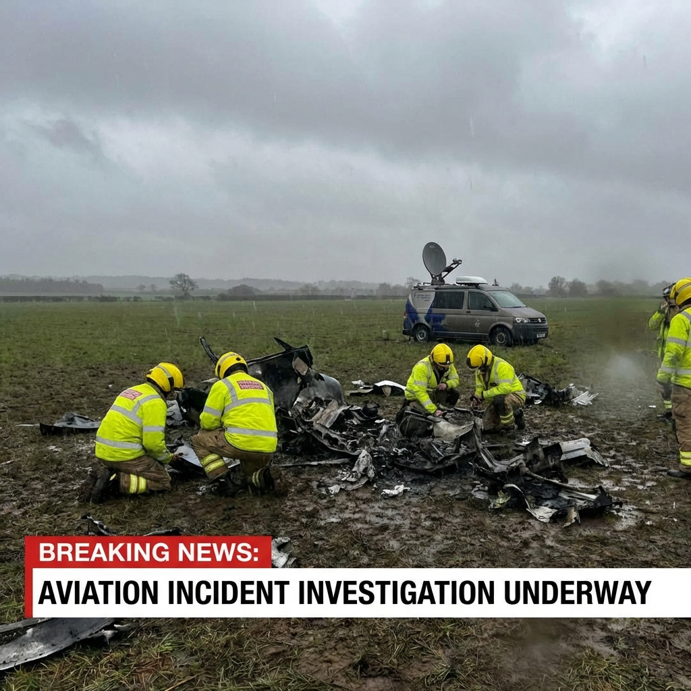

DGCA Probes Baramati Crash: What We Know About Flight VT-SSK

Pune: The Directorate General of Civil Aviation (DGCA) has ordered an immediate inquiry into the crash of the private charter plane that claimed the life of NCP leader Ajit Pawar and two pilots. Early reports suggest a combination of poor visibility and technical snag may have led to the tragedy.
Investigation Highlights
- The Aircraft: A Bombardier Learjet 45, registered as VT-SSK.
- The Operator: Owned by New Delhi-based VSR Ventures Pvt. Ltd.
- The Crew: Experienced pilots Captain Shambhavi Pathak and Co-pilot Pinky Mali.
The Learjet 45 took off from Mumbai airport at approximately 9:15 AM bound for Baramati. Sources indicate the aircraft lost contact with ATC just moments before its scheduled landing. Eye-witnesses reported seeing the aircraft flying unusually low before banking sharply and crashing into a field.
The Brave Crew
While the nation mourns a political stalwart, the aviation community is grieving the loss of two skilled pilots. Captain Shambhavi Pathak, an experienced aviator with over 3,000 flying hours, was in command. She was assisted by Co-pilot Pinky Mali. Both were employed by VSR Ventures. Colleagues describe them as highly professional and safety-conscious.
Questions on Weather and Aircraft
Aviation experts are focusing on two primary angles:
- Weather: Baramati and surrounding areas were experiencing unseasonal rains and low cloud cover at the time of the incident.
- Aircraft Maintenance: DGCA officials have seized the maintenance logs of VT-SSK to verify if the aircraft had any pending snags.
"We have dispatched a team from the Aircraft Accident Investigation Bureau (AAIB) to the site. Scanning the Flight Data Recorder (FDR) and Cockpit Voice Recorder (CVR) will be our top priority," said a senior DGCA official.
Frequently Asked Questions
Who owned the crashed plane?
The plane was a privately owned Learjet 45 operated by VSR Ventures Pvt. Ltd.
Who were the pilots?
The flight was commanded by Captain Shambhavi Pathak and Co-pilot Pinky Mali.
What caused the crash?
Initial reports point to poor weather conditions including low visibility and rain, though a technical snag has not been ruled out. A DGCA probe is underway.